Round 291. “bold italic 700 has errors and glitches and fractures and hairs”, and then of the 400, “italic has some hairs and stray lines.” Two separate faults were under those words and neither was visible to any gate this project had. The first is a POINT-STREAM fault that ruined the s and the g and nothing else. The second is a CRACK the boolean union leaves wherever two strokes meet at a shallow angle, and it is on nineteen letters across all six fonts, roman included. The first is fixed outright. The second is fixed where a repair can be bounded, and the rest is named below with the reason it was left.
Both letters end in geom.close_corners, a dilate-and-erode that fills the concave corner a union leaves. A round buffer lays a fan of 24 points per quadrant against every vertex of its input, and the input is already a dense polyline at this project’s 11-unit sampling — so the pair came back with three times the points it was handed, nearly all of them a fraction of a unit apart, while the shape moved by a fifth of a percent of its area. That costs twice: the exporter rounds to the integer em grid, where a run of 0.3-unit segments becomes duplicate points and one-unit stair-steps, and geom.fit_curves reads the turn between consecutive segments to find corners, which on a 0.3-unit segment is noise.
The closing now puts its result through Douglas-Peucker at a tenth of a unit. DP is the right tool rather than a resample because it cannot cut a corner — the recursion always keeps the point of greatest deviation — and the tolerance is the whole guarantee: a ten-thousandth of the em, a thousandth of a pixel at the 13 px this face is read at.
| font / glyph | points | segs under 2u | duplicate points | ink area |
|---|---|---|---|---|
| bold italic s | 286 → 131 | 170 (59%) → 13 (10%) | 52 → 0 | +0.00% |
| bold italic g | 605 → 354 | 291 (48%) → 14 (4%) | 236 → 0 | +0.01% |
| italic 400 s | 273 → 130 | 149 (55%) → 7 (5%) | 45 → 0 | +0.00% |
| italic 400 g | 599 → 339 | 292 (49%) → 18 (5%) | 234 → 0 | +0.01% |
For scale: the same measure on the family’s own c e n o reads 0 to 6%. Those two letters were the only ones in the face with this fault, and they were the only two calling the closing.
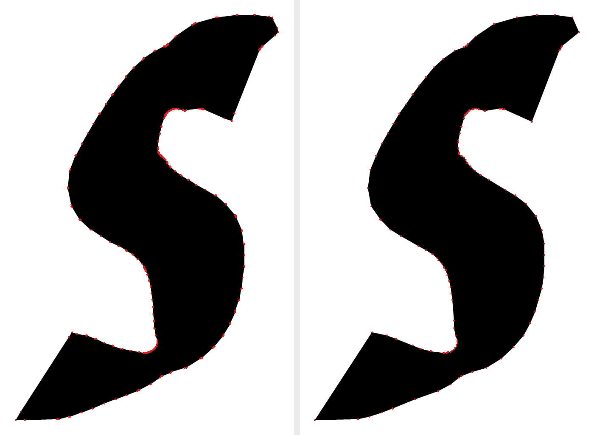
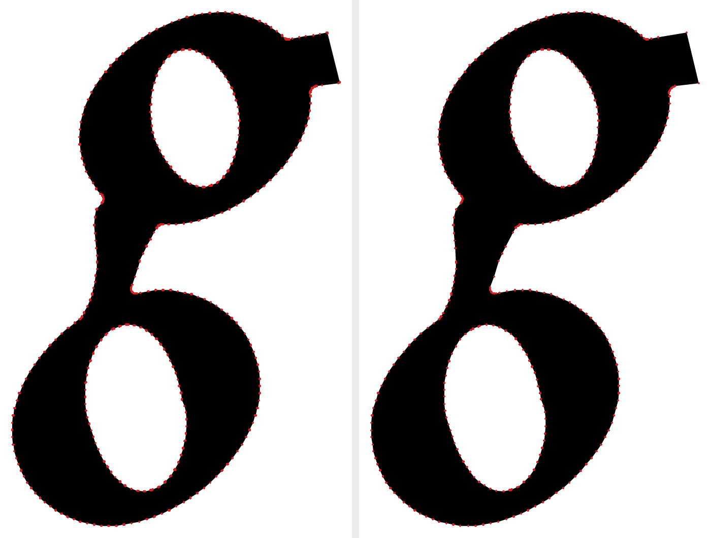
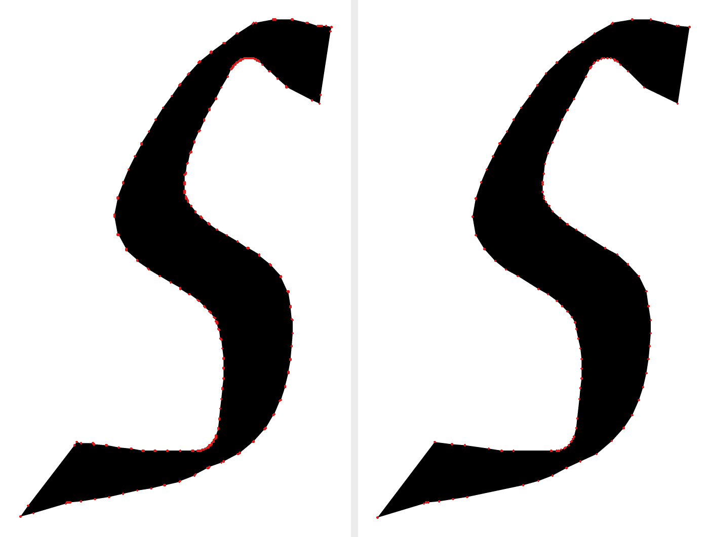
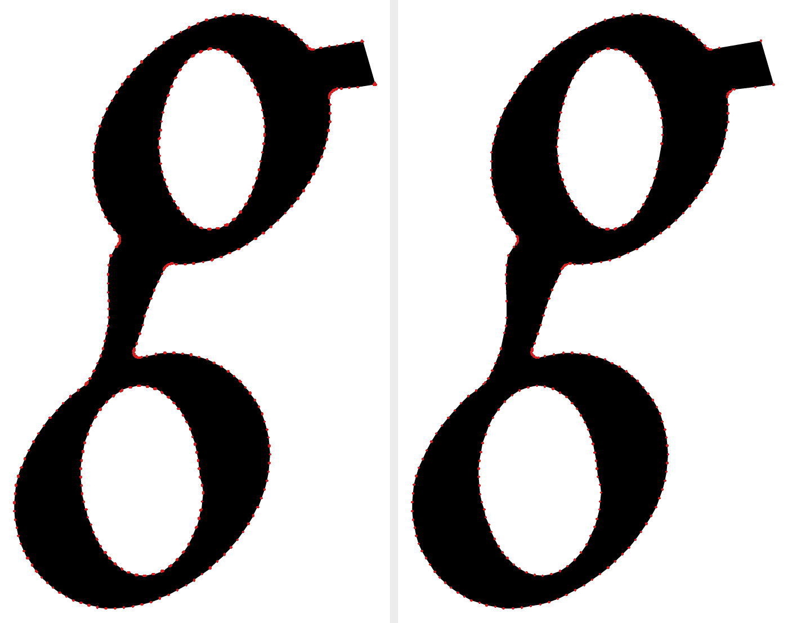
geom.ink ADDS strokes, it does not blend them. Where two of them meet at a shallow angle the boolean’s boundary runs out along one stroke’s edge and straight back along the other’s, leaving a tapering hairline of WHITE driven into solid ink. The italic x carries one 18 units long closing to 1.0, the y one 18 long and 4.7 wide. They render in FreeType exactly as they measure, which is where the owner found them; at 13 px they are a quarter of a pixel of gray, which is why sixteen rounds of reading-size proofs never caught one.
A new pass splices across such an excursion, and it may only fire when all five hold: the excursion is one or two vertices long; its ends close to within 8 units; the path removed is at least 12 units; the area recovered is under 120 square units; and the first and last segments are antiparallel to within 40 degrees. The last of those is the condition that separates a crack from a corner, and without it the pass shaved the l’s foot serif and its ascender top. A sixth rule is that a weld may only ADD ink: a splice that removes it is shaving something the drawing put there, and with that allowed the pass took eight units off the italic 6’s entry terminal.
The designed hairline gap is safe, and the vertex count is why. The Y’s and the P’s gap is about eight units wide — the same order as these cracks — but it is held within a unit of that width over 27 to 67 units, which at 11-unit sampling is three to six vertices down each flank. A crack is one or two.
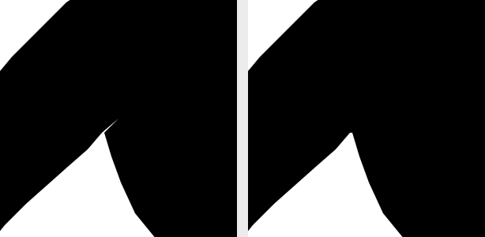
The y’s crack is still there. Its ends close to 8.5 units rather than 8, and reaching it means a width of 12 — at which the pass stops repairing and starts blunting: every wedge serif tip in the face reads at the same geometry, and at 12 the sweep cut the tips off the a h m n u y A K M N Q V W 4 6 9. That was measured on a before-and-after sheet of all 26 sites it would newly touch, and rejected on it. Raising the antiparallel threshold to 152 degrees did not separate them either. The real fix for these is to re-aim the two strokes where they meet, per letter — which is what cmp_joints.py has said since round 179: the fault is in the direction the edges arrive at, not in how fat they are. That is a drawing decision and it is left for a ruling rather than taken here.
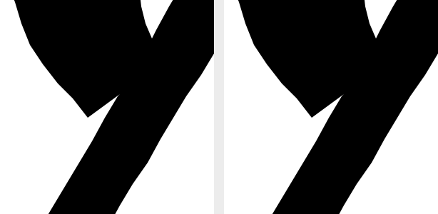
The bold italic e was reported as having an angular left edge to its eye and a terminal that ends on a step. Both are real and neither is a defect: ALBO_CURVES has been 0 since round 231, so every contour in this face is a POLYGON at 11-unit facets, and the integer em grid then leaves one-unit jogs on any shallow edge. The e carries four such jogs and zero reversals. Eleven units is 0.14 px at 13 px and 0.44 at 40; one unit is 0.013 and 0.04. The e is byte-identical before and after and is shown here to prove it.
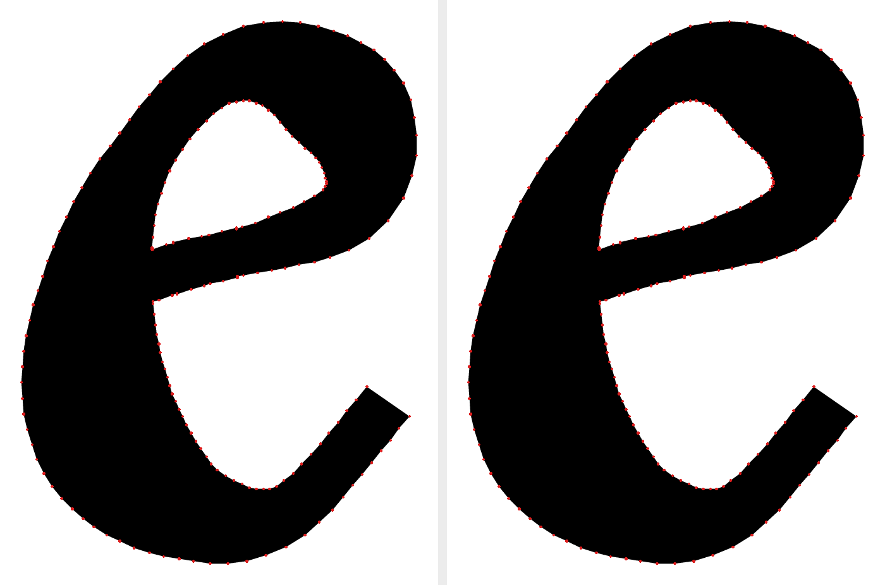
cmp_contour_hairs.py is new and reads the contour’s own point stream, before any raster — which is the half cmp_aldine_glitch.py cannot see. It fails on a reversal past 165 degrees, on a HAIR (a reversal past 150 whose shorter arm is under 8 units), and on a glyph whose sub-2-unit segments exceed a quarter of its contour. Coincident points are collapsed before any angle is taken: a zero-length segment has no direction, and a spike beside a duplicate point otherwise reads as 90 degrees or as nothing depending on which way the arithmetic falls.
| font | letters with findings, before | after | all 306 glyphs, before | after |
|---|---|---|---|---|
| bold italic 700 | 14 | 3 | 45 | 22 |
| italic 400 | 19 | 12 | 67 | 50 |
| extralight 200 | 13 | 9 | 59 | 50 |
| regular 400 | 8 | 5 | 44 | 32 |
| bold 700 | 3 | 1 | 24 | 15 |
| black 900 | 4 | 4 | 36 | 27 |
The roman DID move, and it moved because the same defect is provably in it: the Regular’s e and y each carry an exact 180-degree reversal, and the ExtraLight’s m three. Twelve welds land in the roman 400 and every one of them adds between 0.01% and 0.09% of its glyph’s ink. No kern pair changed in any of the six fonts; the touch sweep, the counter dents and the figure spread are at their baselines, and the ExtraLight’s glitch count fell from 21 findings to 18.
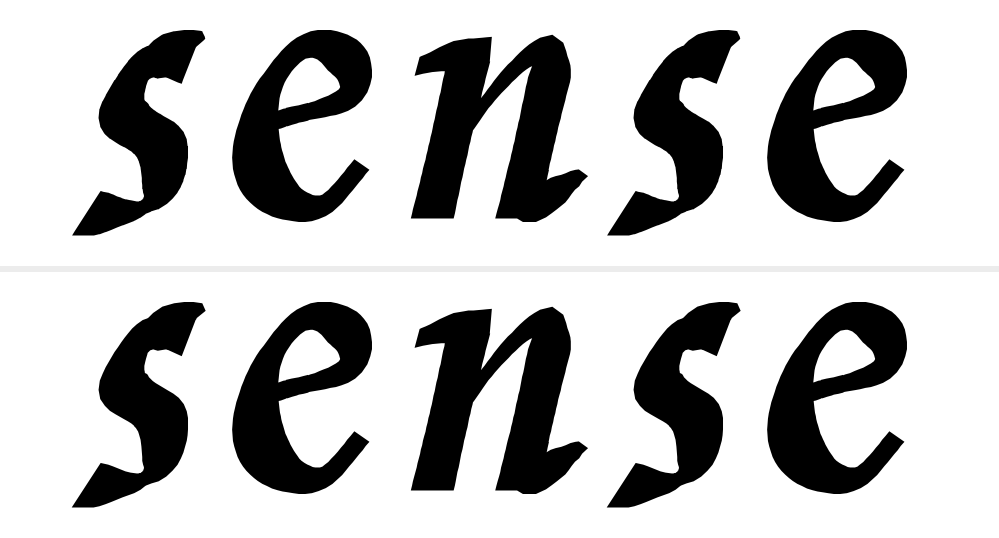
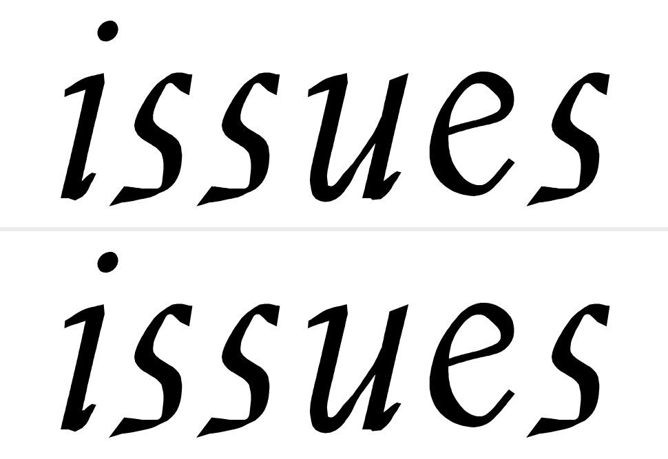
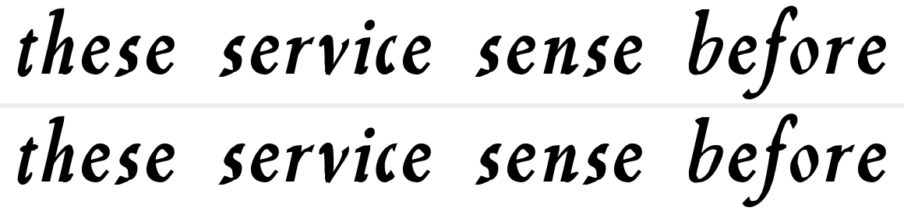
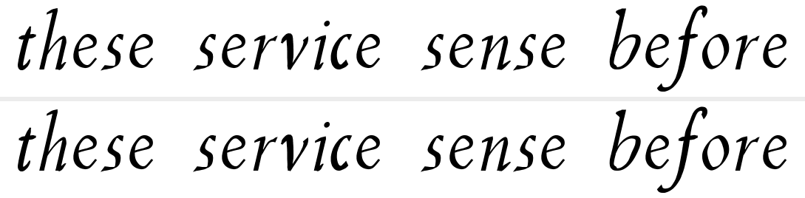
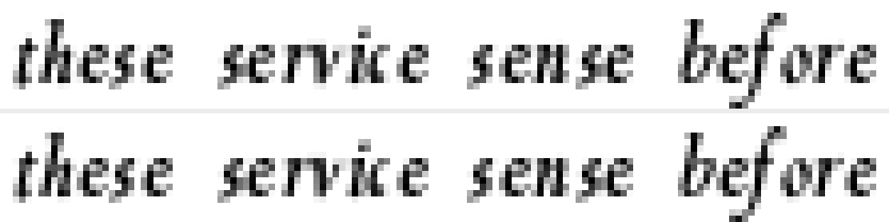
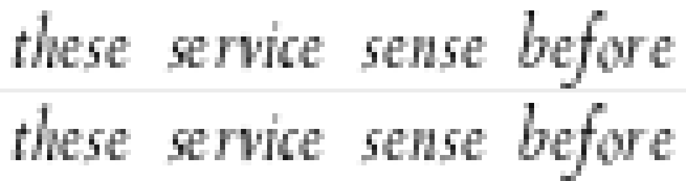